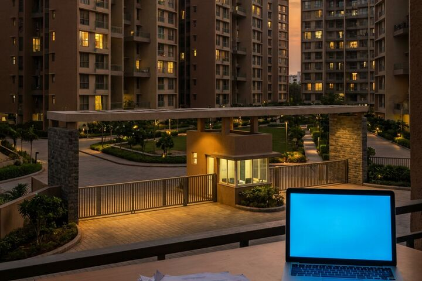

Baner police arrest 21-year-old for allegedly posing as IAS officer, cheating housing society of Rs 35 lakh
Police estimate that members of a Pune housing society lost around Rs 35 lakh, and a complaint alleges a 21-year-old used forged signatures to start online banking on the society’s account.

IllustrationA 21-year-old who lives near Balewadi High Street in Baner has been arrested by Baner police for allegedly posing as an IAS officer to cheat a Pune housing society of about Rs 35 lakh. He lives in a co-operative housing society.
Police say telling residents he had cleared the UPSC exam and become an IAS officer helped him win their trust.
According to the complaint, he promised residents he would sell the society’s unsold flats through a lottery. Several people allegedly paid him money believing the offer was genuine. He was serving as the society’s chairman at the time.
The complaint alleges that, without the members’ knowledge, he used forged signatures of a society member and the complainant to start an online banking facility on the society’s account. He then allegedly took a loan of Rs 10 lakh against a Rs 37 lakh deposit held in the society’s account.
He also allegedly broke the society’s fixed deposit and moved the money into his personal account. Police estimate that society members lost around Rs 35 lakh.
Baner police registered a case on the basis of the complaint. The investigation is still on.